Sudhanshu Basu Roy
CS 428 Virtual and Augmented Reality
Project 2 - One More Cup of Coffee
Introduction
This project was made as a part of the coursework in CS 428 Virtual, Augmented and Mixed Reality, instructed by Dr. Andrew Johnson at the University of Illinois at Chicago during the Fall 2022 semester. The aim of the project was to create a Virtual Reality scene comprising a commercial kiosk of our choice. I worked on it with my teammate, Advait Pai. Our choice of kiosk for the scene was a convenience store that sells packaged food and stationery.
Demo
How To Use The Application
- The scene should load as seen on the right. You may reorient your center at any point using the Oculus button on the right hand controller. You will need to have a 10'x10' clear area to use a application appropriately
- Using the Thumbstick on the right hand controller, Navigate to the Welcome mat at the entrance of the store by positioning the green circle and clicking the Thumbstick
- On the right, you will see a fridge with multiple food items in the racks. All the food in the fridge can be interacted with by reaching for the food and grabbing it by pressing the Grab Button on either controller. The food can be moved, dropped or tossed in any direction.
-
To the left of the fridge are the vending machines. The
yellow machine on top dispenses Chips, Chocolate and
Candy. The desired food can be obtained by reaching out
for the associated green button on the machine, which
presses it and after a sound cue, dispenses the selected
food in the drawer below. The drawer can be opened by
grabbing and pulling at the handle, giving access to the
food inside which can similarly be taken out.
Note that only one food item may be dispensed at a time. -
Under the yellow machine is the red vending machine that
dispenses ice cream bars. The door can be opened via the
grab-and-pull mechanism and the ice cream can be
accessed inside. Closing the door spawns a new ice cream
bar inside.
Note that closing the door multiple times spawns multiple ice cream bars in a stack - On the left side of the store, there is a stationery rack, which three shelves of stationery items. Similar to the fridge, all the individual items on the stationery rack are interactable via a grab-and-move mechanism.
-
To the left of the stationery rack is a gumball machine,
that dispenses a single gumball upon pressing the button
on the machine.
Note that only one gumball may be dispensed at a time - To the front of the store is the billing desk, manned by a human model of a cashier. The interactable objects on the billing desk are a mouse, a pencil stand and the cashier's name tag.
- To the right of the billing desk is a digital kiosk, which upon touching generates a bill on the billing desk after a sound cue.
- Both the human models in the scene have voicelines that are triggered by touching the human models.
- The seating area present directly opposite the store can be accessed via the teleporter by using the Thumbstick on the right controller


Running the Project
Prerequisites
- Unity Hub and Unity (Version 2021.3.6f1) - Download Resource
Installing The Project
-
Access the GitHub link using the following link: GitHub Repository
-
Click on code and then “Download ZIP”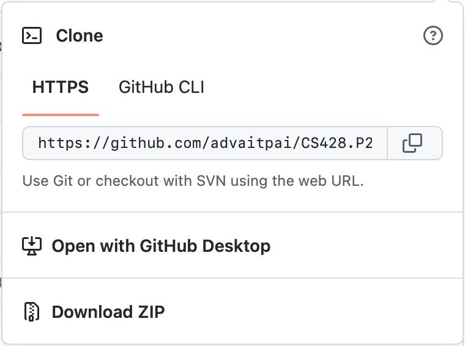
-
Open the Zip and extract its contents to a folder with the structure in the image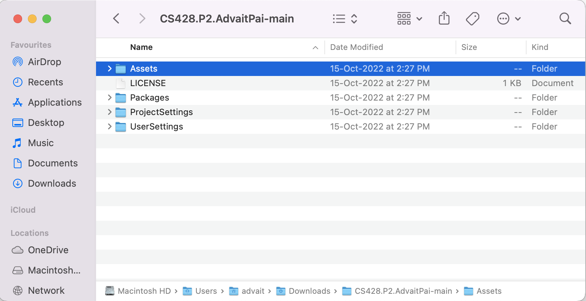
-
Open Unity Hub and click on “Open” next to “New Project”. In the File Explorer, navigate to the folder containing the unzipped files. Once found, click “Open”. Make sure your Unity version is 2021.3.6f1.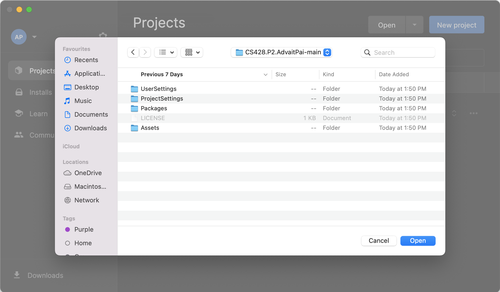
-
The project will take some time to load, you may need to wait.Once the project is loaded, you can close the window shown in the adjacent image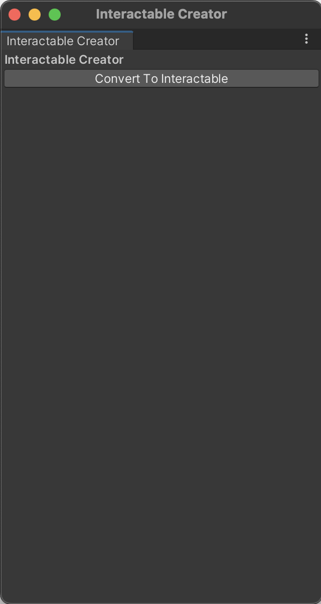In the Unity Window, in the bottom half, go to the “Project” Tab. In the “Project” explorer, go to “Assets” then “CoffeeShopStarterPack” then “Scenes”. Within the “Scenes” folder, drag the “CoffeeScene” to the project “Hierarchy” as shown in the image. If “Untitled” scene still exists, right click and delete it.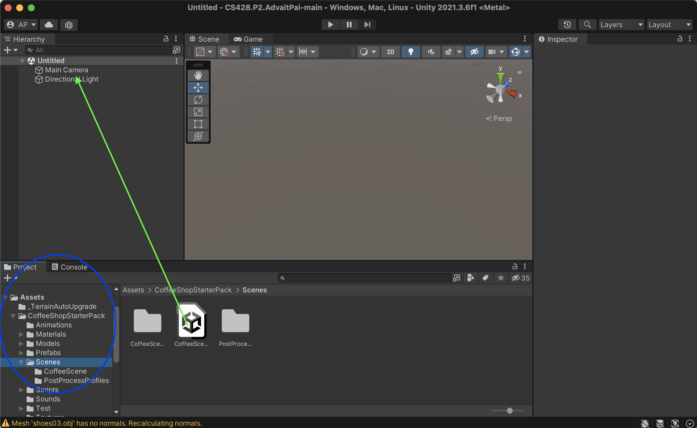Now we will try to run the project.To run in the project in the Simulator, in the hierarchy “CameraRigs.SpatialSimulator” must be checked, as shown in the image. Also “CameraRigs.UnityXRPluginFramework” should be unchecked in the hierarchy. Once done, you can press Play to use view the project in Simulator Mode.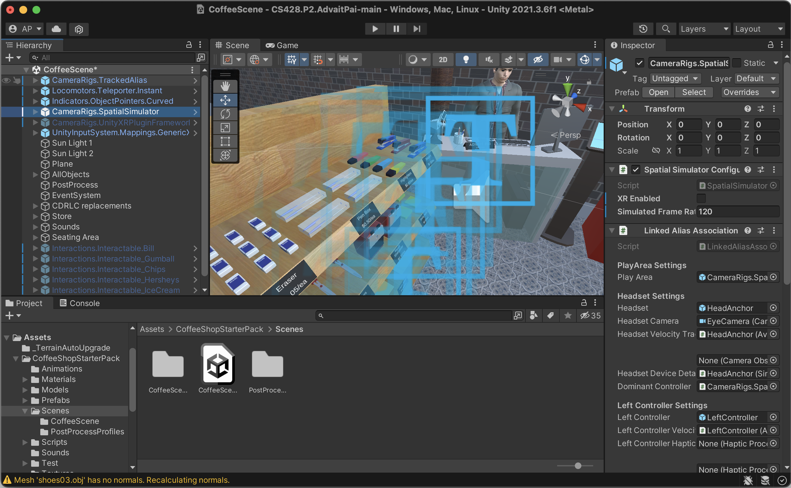You can move the person around using the WASD keys and the mouse. If you want to switch movement between the person and controllers – Press “1” to control the person, Press “2” to control the left hand and Press “3” to control the right hand.If you want to run the project on the Quest, continue to the next hti.First, uncheck “CameraRigs.SpatialSimulator” and check “CameraRigs.UnityXRPluginFramework”.Now in the navigation bar, go to “File” then “Build Settings” and the following window should appear. On the left side select “Android” and the “Switch Platform” below. The switching platform process takes some time.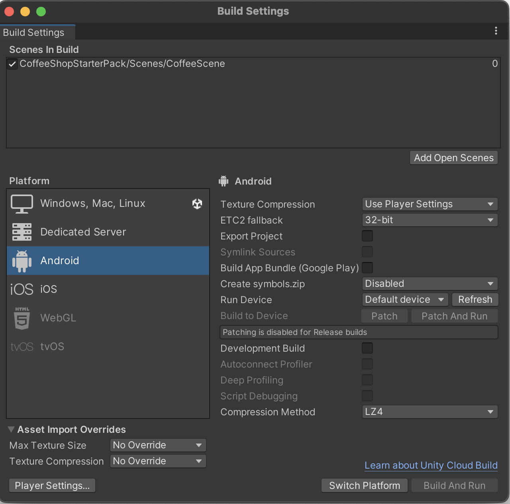Note: In case, you’ve already installed Unity without Android support, you can still add Android tools from Unity Hub. On the Installs tab, click the gear icon next to the Unity version to which you want to add the Android tools, and then click Add Modules. Select Android Build Support checkbox, and then select Android SDK & NDK Tools and OpenJDK checkboxes.Note: When connecting the Quest you may need to give some permission. You should allow all.Once the switching platform is complete, change the “Texture Compression” to ASTC. In the “Run Device” section, select your Quest headset. Incase it is not visible, press “Refresh”. Otherwise you may need to troubleshoot the detection of the Quest by your device.Once the Quest is set as “Run Device”, click on “Build and Run”.This will pop up a new window to save the .apk file. You should save this anywhere outside the project folder and with any name.Once the .apk is saved, it will be automatically deployed on the Quest. You are now set.
Assets Used In The Project
Knickknack 1 (United Center)
# Name Image Sound 1 Mark Otto 2 Mark Otto Performance Analysis
Convenience Store
- The scene when viewed entirely from in front makes the application run at around 60 frames per second (henceforth fps)
- Upon moving closer and viewing the kiosk from in front, the fps boosts up to about 65-70 fps.
- Looking to the left of the store, the fps falls to roughly 45-50 fps. This is due to the high polygon count of the the building in the backgrounf combined with the stationery rack and its objects.
- Viewing the right side of the store makes the fps go back up to 70-75. This is due to the low polygon count of the building in the background
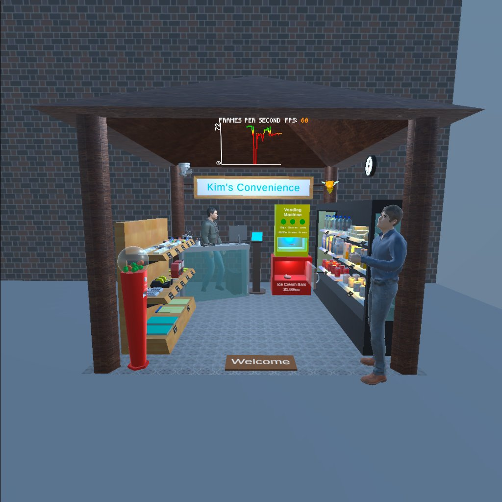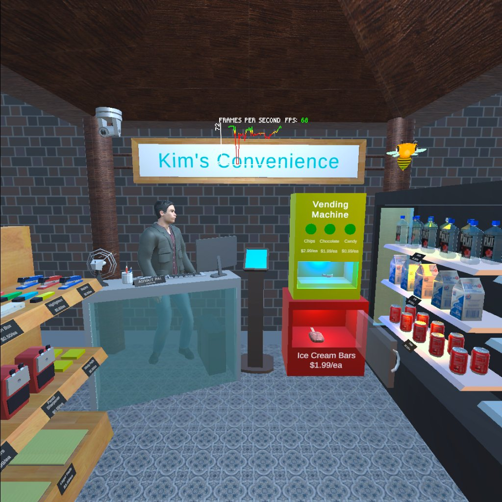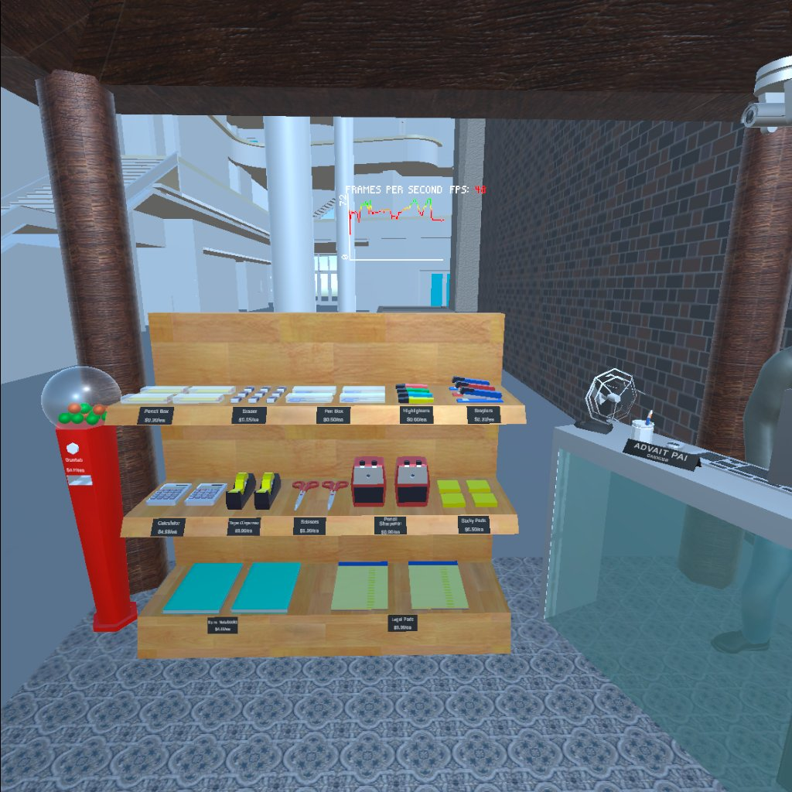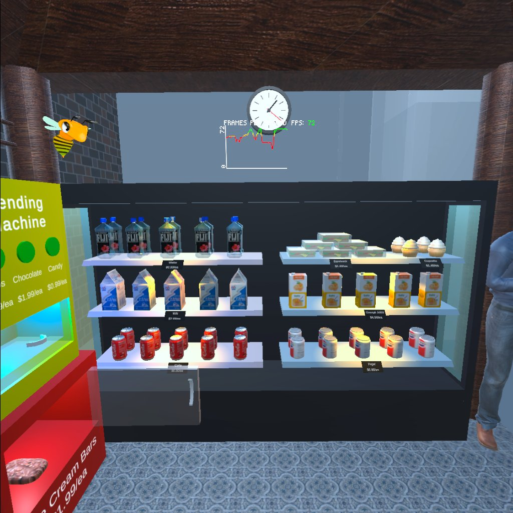Seating Area
- Looking at the seating area gives gives a stable framerate of 65-70 fps.

Conclusion
The application on average runs at about 60 fps, never dipping below 45. The reason it dips to 45 is due to the presence of high polygon building models in the background of the left side of the store.